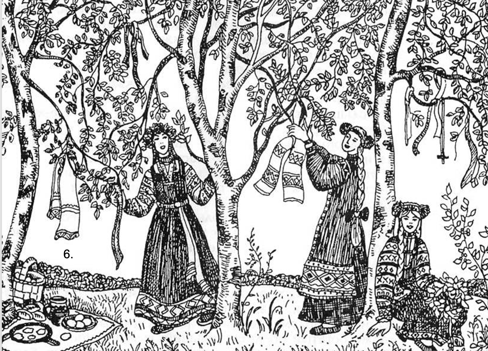
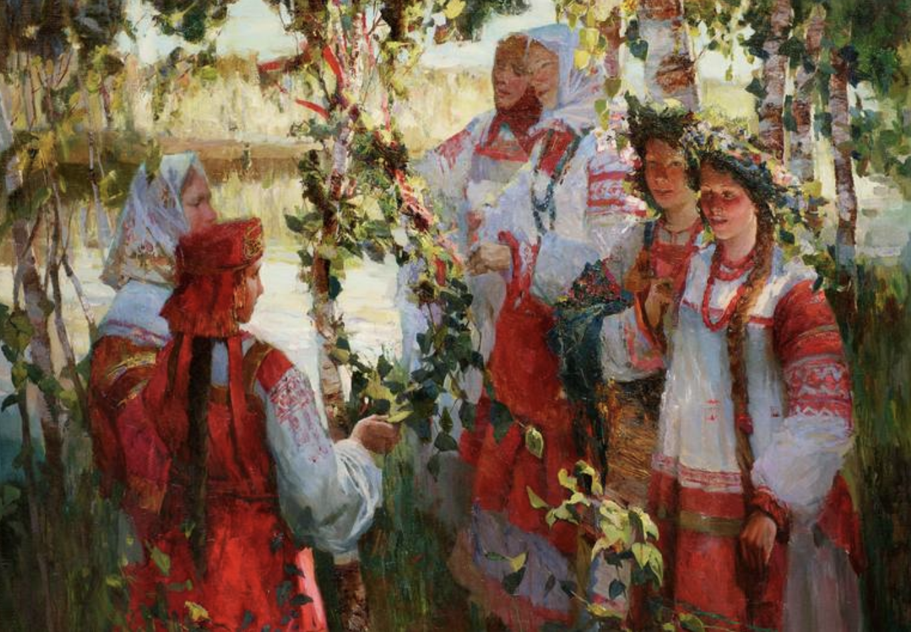

Mermaid Week
Mermaid week (end of May-early June). This is a whole complex of ceremonies aimed primarily at the commemoration of ancestors and celebrating fertility of the earth. In the framework of the folk agricultural calendar, Mermaid Week coincides with Trinity. It sometimes falls on the week preceding the holiday, and coincides with the so-called Trinity weeks.
The Mermaid week was filled with rituals, customs, and prohibitions, which were associated with the belief in the temporary appearance of mermaids and the desire of the peasants to avoid their harmful influence.

Mermadi Week is tied to the date of Pentecost. It’s also known as “Green Christmas” or “Green Holiday” as homes and churches are decorated in greenery, and celebrations take place in birch forests where young women and girls wear crowns woven from flowers and plants. It takes place either 40 or 50 days after Easter, and the biggest celebrations take place on Semik (from the Russian word for “seven,”) the seventh Thursday after Easter
Kumlenie is a Mermaid Week ritual. A group of girls approach wreaths hanging on trees (which they themselves hung before the ceremony) and through which it was customary to kiss, then there was an exchange of gifts and many turned into sisters for the rest of their lives.

There was a widespread ban on heavy (field) work; the peasants avoided going into the forest and fields alone, taking horses and cattle into the forest, bathing in lakes and rivers, especially at noon and midnight. Women believed that during the Mermaid week you can not rinse your clothes, whiten your canvases, do work related to spinning, weaving, sewing.
Honoring the holiday of mermaids and compliance with certain rituals guaranteed the help of mermaids.